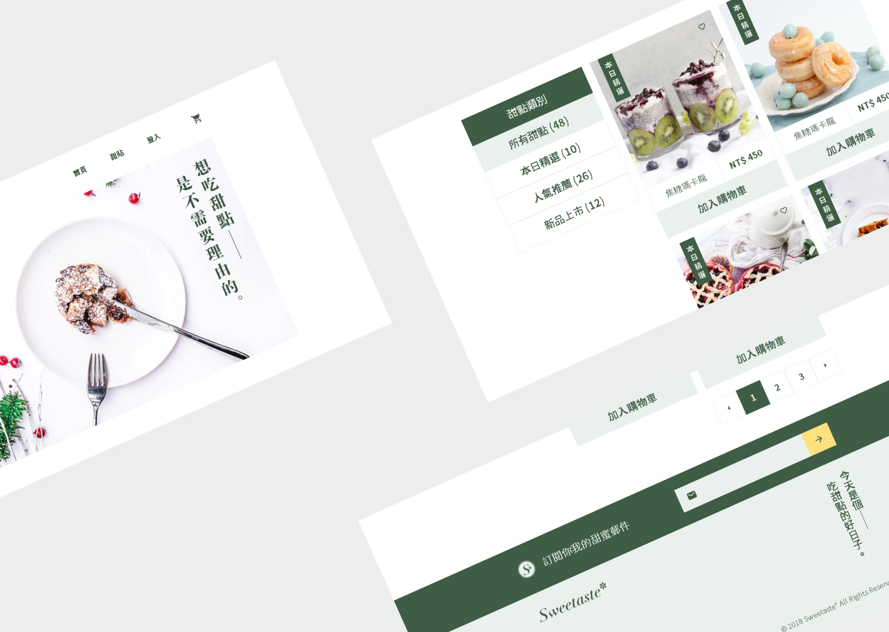

網頁前端
SCSS, CSS, HTML
我參加六角學院舉辦的活動＂The F2E 前端 & UI 修煉精神時光屋＂，於活動期間完成的切版作業。
2021 年 11 月
為使各瀏覽器的顯示結果一致，使用 Reset.css 以初始化各種元素的設定。
採用 OOCSS 設計模式，每個選擇器只有一個屬性設定。
類別名稱盡量使用屬性設定的 Emmet 縮寫。
分為七個部分，依序是預設、變數、顏色、尺寸、空間、顯示、位置。

網頁展示、原始碼
視覺稿
返回所有作品